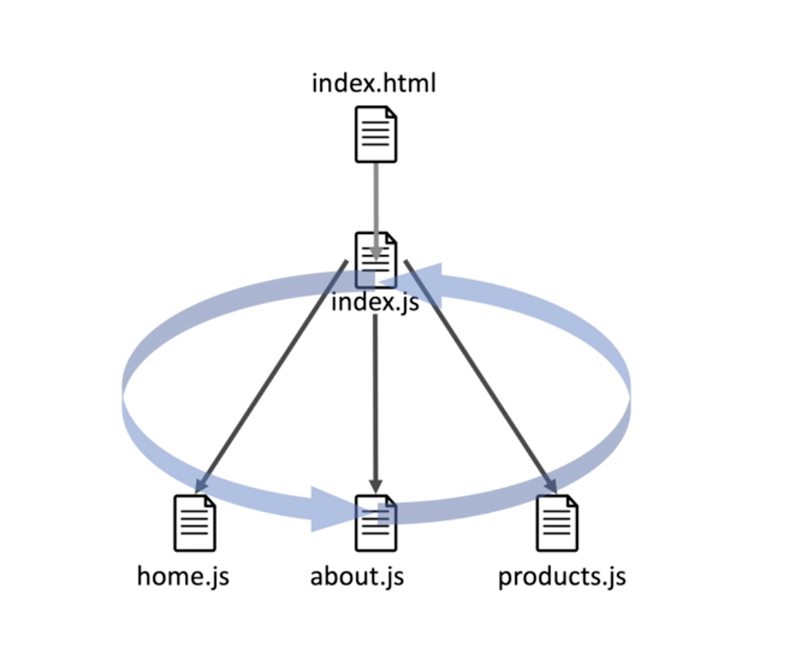

Please review the concepts covered this week.
In software development, information architecture refers to how information flows throughout your software from file to file as well as how the files are structured. It also refers to what data is shared between the files using modularity and context. Here is an example of how the basic structure, or information architecture of the "Bad Bank" exercise is designed:
In the old days, when you clicked on a link on a webpage, it would often result in a process like this:
Although it worked, there was room for improvement. Now, single-page applications, built with libraries like React, are used much more commonly, on which the data is cached (stored) on the browser. Links still map to separate pages in the application, but since the data is stored on the browser, the need to ask the server for the data is eliminated, and the pages load much faster.
Context provides a way to pass data through a component tree, such as from an index.js file, without having to pass properties down manually at every level. In the "Bad Bank" example, Dr. Sanchez created a "user" context that would allow a user to share authenticated data in every piece of the application. Now, a user can navigate through several different sections of an application, without having to log in each time they go to a new page. To learn more, review the React documentation on context.